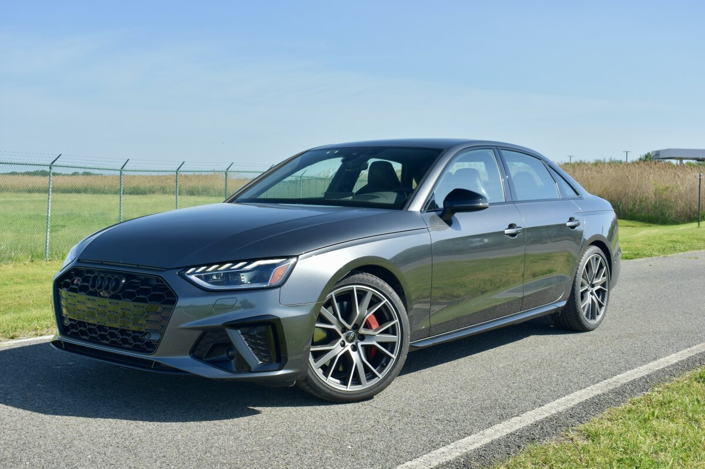

S series
S1=2.0 turbo 4 cylinder engine, makes about 230hp and 0-60 in about 5.8 seconds, comes with quattro awd
S3=2.0 turbo 4 cylinder, makes 290hp and 0-60 in about 4.5 seconds, it also comes with quattro awd
S4=comes with a single turbo v6 makes about 350hp and 0-60 is about 4.5 seconds avalible in quattro awd
S5=comes with a turbo v6 similar to the s4 make 350hp and 0-60 is also 4.5 seconds comes with quattro awd, my personal favorite
S6=comes with a twin turbo v6 making 450hp and 0-60 in 3.5 seconds also comes with quattro
S7=comes with same twin turbo v6 as the s6 and also makes 450hp 0-60 a little slower at 4 seconds and its available with quattro awd
S8=comes with a 4.0 twin turbo V8 makes a whopping 560hp and a 3.5 second 0-60 and of course it comes with quattro awd
SQ5=comes with the same turbo v6 as the S4 and S5 makes 350hp and doe 0-60 in 4.5 second which is amazing for a budget sports suv
SQ7=comes with a 4.0 liter twin turbo V8 making 500hp and does 0-60 in 3.8 seconds and has quattro awd
SQ8=comes with a 4.0 liter twin turbo V8 making 500hp abnd does 0-60 in 3.5 seconds and has quattro
